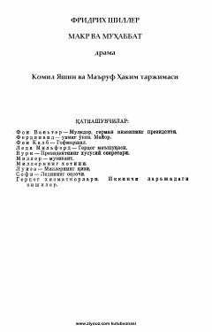

MVIjtimoiy tengsizlik va sof muhabbatning fojiali to'qnashuvi haqidagi klassik drama.
Fridrix Shillerning ushbu mashhur dramasi jamiyatdagi tabaqalararo ziddiyatlar va sof muhabbatning fojiali taqdirini tasvirlaydi. Asarda boy zodagonlar va oddiy xalq vakillari o'rtasidagi ijtimoiy to'siqlar hamda insoniy tuyg'ularning murakkabligi mohirona ochib berilgan.